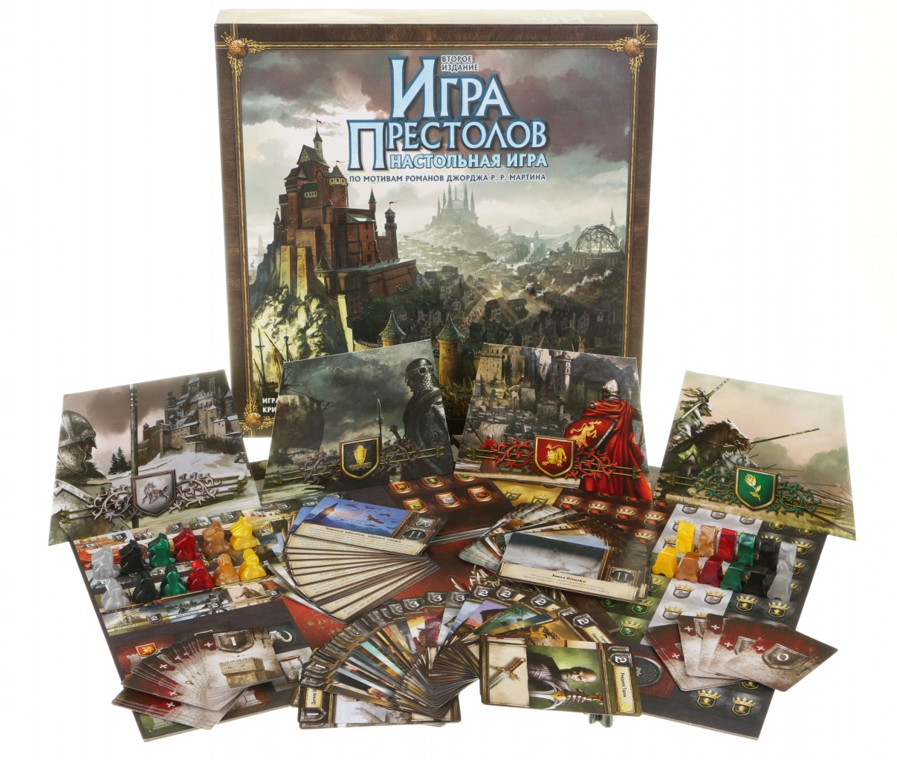
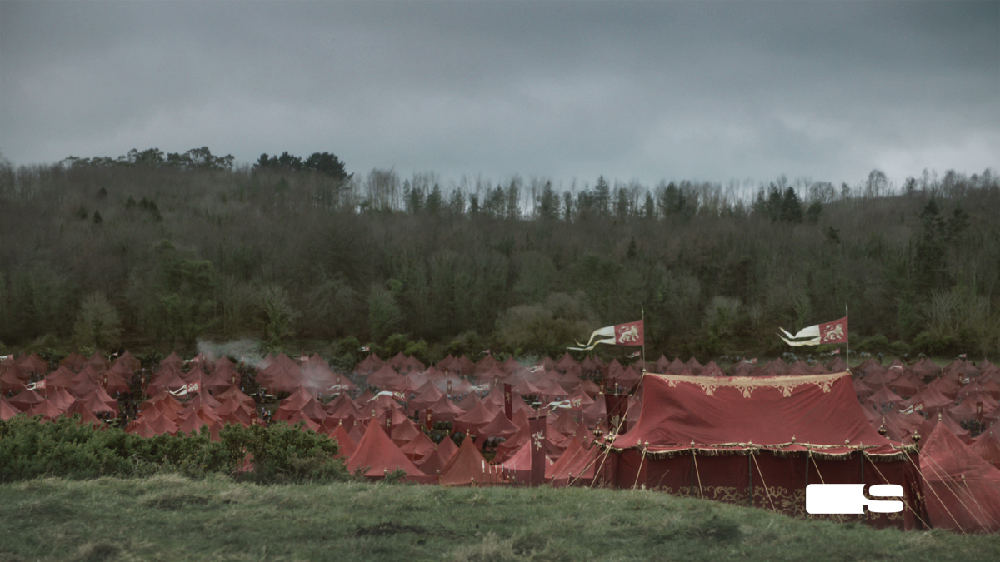
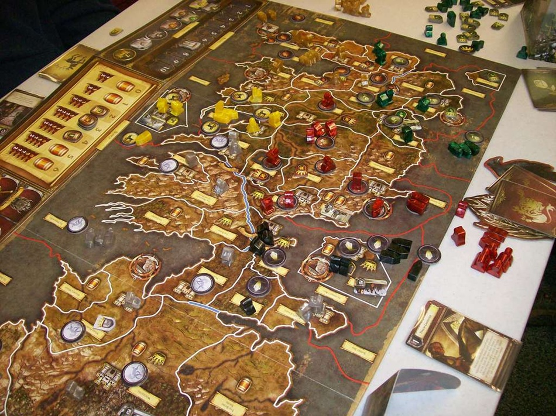
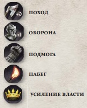
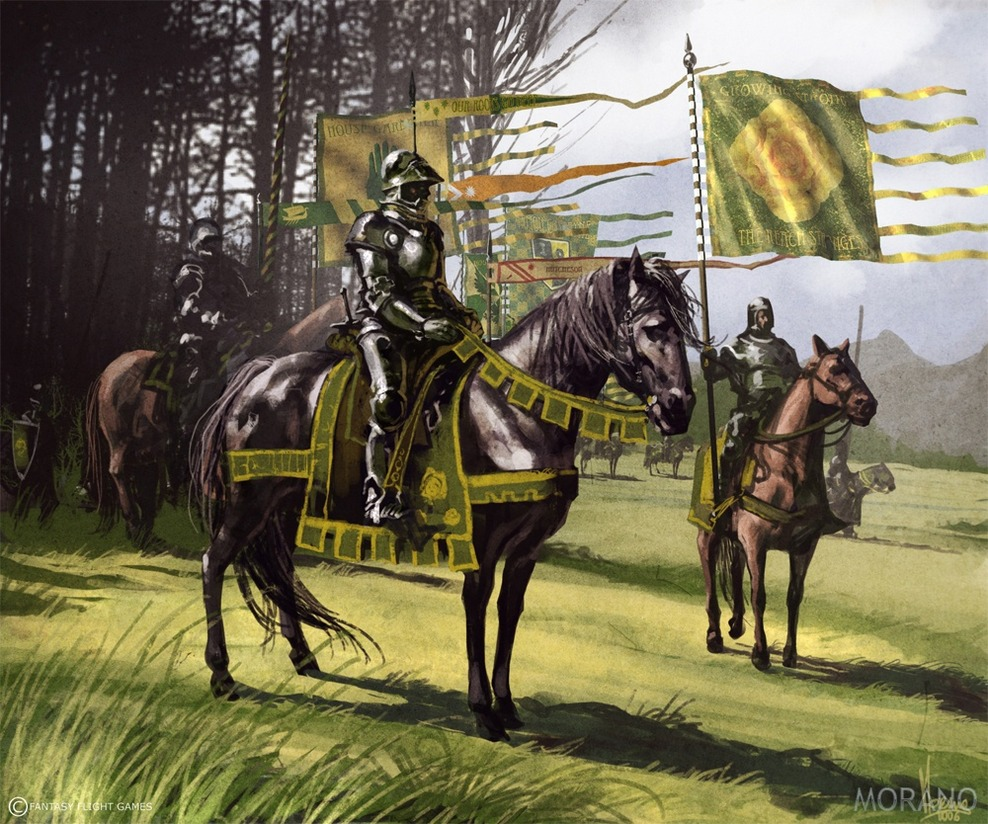
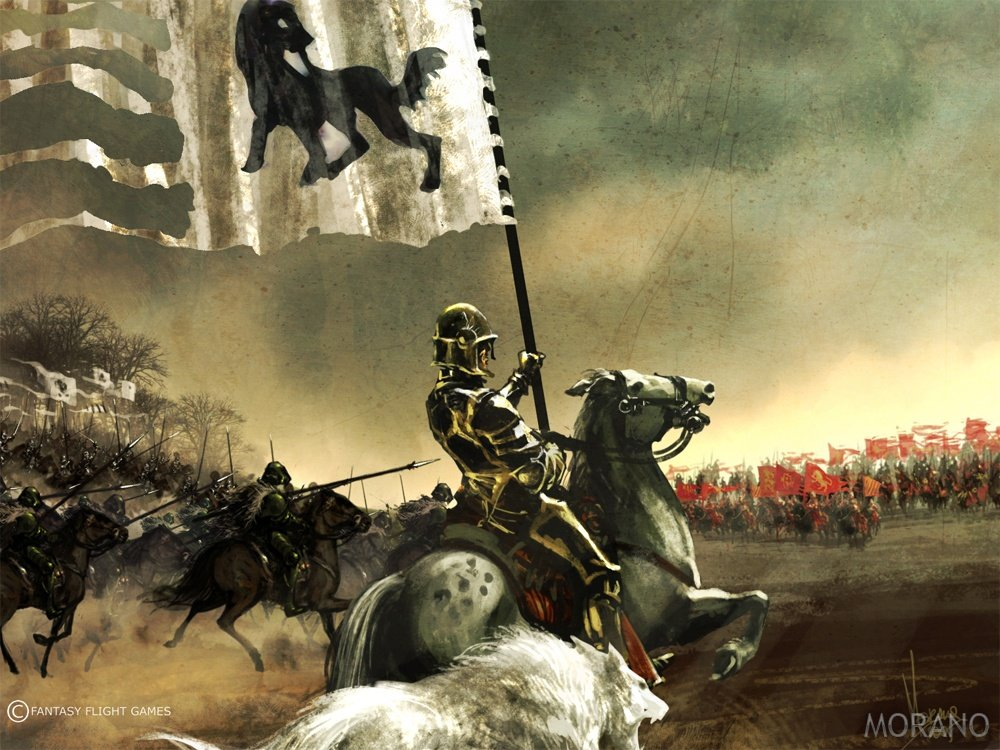
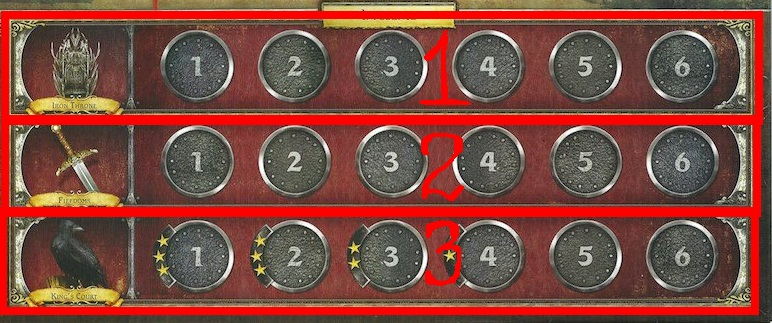
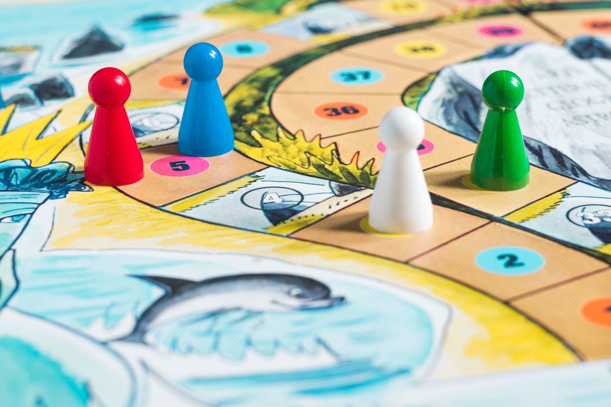
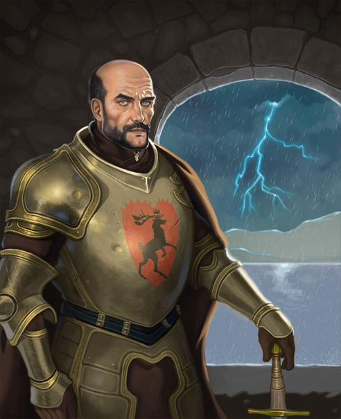
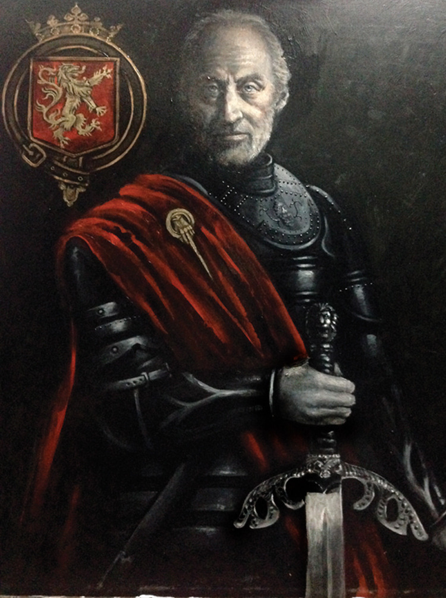

Настольная «Игра престолов», созданная на основе цикла романов Джорджа Мартина «Песнь льда и пламени», примет от трёх до шести игроков в мир эпических событий кровопролитной саги. Каждому из участников «Игры престолов» предстоит возглавить один из Великих домов, сражающихся за главенство над Семью королевствами Вестероса. Собирая армии, захватывая земли, создавая союзы, Великий дом стремится подчинить себе наибольшее количество замков и крепостей, чтобы подкрепить свои претензии на власть и воссесть на Железном троне.
Игроков: 3—6 (в расширениях до 8)
Возраст: 13+
Подготовка к игре: < 10 минут
Длительность партии: 2—5 часа
Развивает навыки: Стратегическое мышление

Наполнение игрового комплекта
Цель игры: В конце 10-го раунда игры победителем становится тот Дом, под властью которого находится наибольшее количество земель с замками или крепостями. Также Дом немедленно побеждает в игре, едва в его власти оказываются семь таких земель.
Великие дома ВестеросаГеймплей
Условия победы: Чтобы одержать победу, игроку необходимо захватить власть над определённым количеством замков и крепостей (доступные области определены заранее, они зависят от количества игроков), или иметь наибольшее количество замков и крепостей в подвластных землях в конце десятого раунда.
Подготовка к игре: Игровой процесс протекает на поле, которое представляет собой континент Вестерос, разделённый на регионы. В большинстве регионов расположена хотя бы одна стратегическая иконка, обозначающая замок, крепость, бочонок снабжения, или иконку власти. Некоторые области имеют несколько таких иконок. Игрок выбирает себе Дом, размещает стартовые юниты войск на игровом поле, получает имущество дома и расставляет жетоны влияния, победы и снабжения на специальных треках.
Раунд игры: Партия длится десять раундов. Каждый раунд состоит из трёх фаз:
Фаза Вестероса (не разыгрывается в первом раунде)
Начиная со второго хода, в начале каждого раунда, игроки переворачивают карты Вестероса (по одной из каждой колоды) и исполняют их инструкции. Карты Вестероса содержат события, которые позволят игрокам устроить сбор войск в подвластных землях, вступить в борьбу за влияние, пересмотреть снабжение для войск. События также могут запретить игрокам использовать определённый тип приказа в текущем раунде, или даже вызвать атаку одичалых.
Фаза замыслов
Игроки обязаны разместить жетоны приказов рубашкой вверх в регионах, где находятся отряды Дома. Отличительная особенность «Игры престолов» в том, что все игроки отдают приказы одновременно, стараясь предугадать действия противника и создать наилучшую стратегию действий. Кроме того, у каждого Дома имеется ограниченное количество приказов каждого типа, которые они могут использовать.
Приказы бывают пяти типов:
Марш (даёт отрядам возможность перемещаться из одной области в другую, вступая в сражение, если там находятся отряды другого Дома)
Оборона (даёт отрядам бонус к защите, если в их область был совершён поход вражеских отрядов)
Подмога (даёт отрядам возможность участвовать в сражениях, проходящих в соседних регионах)
Набег (игрок может снять вражеский приказ набега, подмоги и усиления власти из соседней области)
Усиление власти (позволяет игроку получить жетон власти, который можно использовать для усиления влияния)
У каждого дома есть только три приказа каждого типа, однако один приказ каждого типа отмечен звёздочкой. Игроки могут использовать ограниченное количество приказов со звёздочкой. Это ограничение зависит от положения дома на треке Королевского двора.
Фаза действий
В этой фазе отряды Домов выполняют полученные приказы. Игроки ходят по очереди в соответствии с положением Дома на треке Железного трона. В порядке хода игроки выполняют приказы набегов, потом приказы походов, а в конце раунда — приказы усиления власти. Приказы обороны и подмоги не разыгрываются отдельно, они выполняются, когда начинается сражение. Во время боя, игроки складывают силу каждого дружественного юнита, стоящего в области и получают общую силу войска. На общую силу могут оказывать влияние приказы, которые игроки отдали в Фазе замыслов (соответствующее число бонуса указано на самом приказе), также игроки вправе запросить помощь от любых войск в соседних регионах, если там размещён приказ подмоги. Наконец, игроки выбирают карту Дома из своих рук, чтобы представить своего лидера в сражении. На картах изображены лучшие люди Домов, имеющие особые таланты, влияющие на процесс сражения или его итоги. Когда общая боевая сила отрядов подсчитана, побеждает игрок с наибольшим её количеством, обязывая противника отступить войском. В некоторых случаях, проигравшему необходимо уничтожить свои юниты. При равном количестве общей силы, побеждает игрок, который занимает наиболее выгодную позицию на треке Вотчин. Игрок, обладающий Валирийским мечом, может один раз на раунд прибавить +1 к общей силе войска. Когда возникает спор в невоенных вопросах, Дом, владеющий жетоном Железного трона, разрешает его на своё усмотрение. После того, как были выполнены приказы усиления власти — раунд заканчивается, игра переходит в фазу Вестероса.

трек Железного трона
трек Вотчин
трек Королевского двора
Что такое настольная игра?
Настольные игры – неоспоримо полезная вещь. Каждая из них развивает множество разных качеств в зависимости от специфики игры: логика в шахматах, стратегия в бродилках с кубиком, даже скорость реакции и обогащение словарного запаса. Всё зависит от того, какую игру вы выберете. Особое внимание следует уделить такому качеству, как коммуникация. В ходе игры члены семьи, друзья или вообще незнакомые друг другу люди налаживают коммуникацию, прокачивают свои навыки в общении, становятся внимательными и видят слабые и сильные стороны каждого участника. Настольные игры полезны в равной степени для всех: малышей, подростков, взрослых.

Пример обычной игры бродилки
Цитаты персонажей
«Железный трон мой по праву. Всякий, кто это отрицает, — мой враг». — Станнис Баратеон

Станнис Баратеон (ориг. Stannis Baratheon)
«Золото приносит свою пользу, но войны выигрываются железом». — Тайвин Ланнистер

Тайвин Ланнистер (ориг. Tywin Lannister)
«Милосердие никогда не бывает ошибкой». — Эддард «Нед» Старк

 Игроки обязаны разместить жетоны приказов рубашкой вверх в регионах, где находятся отряды Дома. Отличительная особенность «Игры престолов» в том, что все игроки отдают приказы одновременно, стараясь предугадать действия противника и создать наилучшую стратегию действий. Кроме того, у каждого Дома имеется ограниченное количество приказов каждого типа, которые они могут использовать.
Игроки обязаны разместить жетоны приказов рубашкой вверх в регионах, где находятся отряды Дома. Отличительная особенность «Игры престолов» в том, что все игроки отдают приказы одновременно, стараясь предугадать действия противника и создать наилучшую стратегию действий. Кроме того, у каждого Дома имеется ограниченное количество приказов каждого типа, которые они могут использовать. В этой фазе отряды Домов выполняют полученные приказы. Игроки ходят по очереди в соответствии с положением Дома на треке Железного трона. В порядке хода игроки выполняют приказы набегов, потом приказы походов, а в конце раунда — приказы усиления власти. Приказы обороны и подмоги не разыгрываются отдельно, они выполняются, когда начинается сражение.
В этой фазе отряды Домов выполняют полученные приказы. Игроки ходят по очереди в соответствии с положением Дома на треке Железного трона. В порядке хода игроки выполняют приказы набегов, потом приказы походов, а в конце раунда — приказы усиления власти. Приказы обороны и подмоги не разыгрываются отдельно, они выполняются, когда начинается сражение. Когда возникает спор в невоенных вопросах, Дом, владеющий жетоном Железного трона, разрешает его на своё усмотрение.
Когда возникает спор в невоенных вопросах, Дом, владеющий жетоном Железного трона, разрешает его на своё усмотрение.